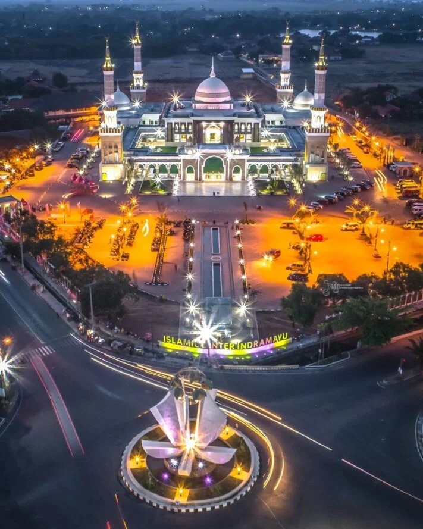

Responsive design adalah pendekatan dalam desain web yang bertujuan untuk
membuat tampilan situs web dapat menyesuaikan diri dengan berbagai ukuran
layar dan perangkat. Dengan menggunakan teknik seperti media queries,
fleksibel grid, dan gambar yang responsif,